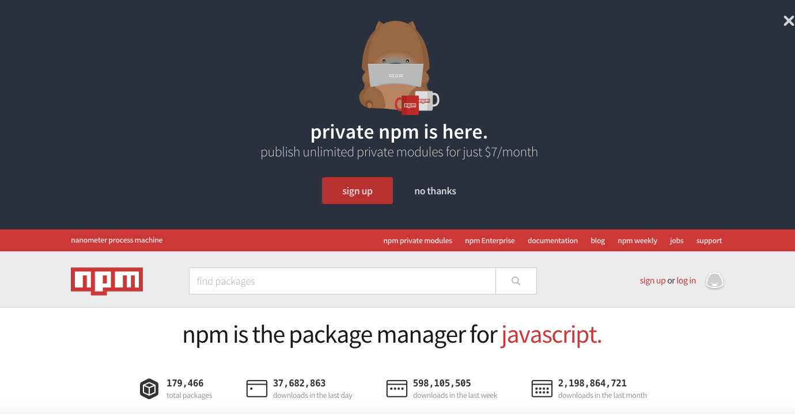

Treinamento VML para Novo Portal Oi
Créditos André Valle / @andrevalle1
O que vamos ver no treinamento?
- História
- O que é NodeJs
- Qual seu objetivo
- Modelo Input/Output - I/O
- Real-Time
- Cases de sucesso
- Instalação NodeJs
- Introdução ao NPM - (Node Package Modules)
- Conceitos basicos
- Como utilizar
- Show me the code
Um pouco de história
Criado por Ryan Dahl em 2009

Ryan Dahl junto a 14 outras pessoas resolveram criar algo que fosse não-bloqueante (non-blocking thread ).
Uma das inspirações de Ryan Dahl para criar Node.js foi ao notar a barra de progresso de upload de arquivos no Flickr, ele percebeu que o navegador não sabia o quanto do arquivo foi carregado e tinha que consultar repetidamente ao servidor.
(Veremos exemplos mais tarde).
Seu desenvolvimento é mantido pela empresa
Ok, agora vamos ao que interessa.
NodeJs
Quem é esse cara?
O que o NodeJs não é?
Node.js não é uma linguagem de programação
NodeJs é um interpretador de código JavaScript que funciona do lado do servidor.
Seu objetivo é facilitar a criação de aplicações de alta escalabilidade (como um servidor web), com códigos capazes de manipular dezenas de milhares de conexões simultâneas, em uma única máquina física.
O NodeJs foi baseado no interpretador V8 do Google Chrome.
(Node foi escrito em C++ e Javascript V8 com +ou- 8000 linhas em C++ e +ou- 2000 linhas de Javascript V8).
Node.js usa um modelo de I/O direcionada a evento não bloqueante.
Thread non-blocking
O que é isso?
Os servidores Apache, Nginx ou Tomcat tem uma característica em comum, que é conhecida como modelo bloqueante.
Blocking-Thread
Exemplo como funciona:
Outros servidores
- Cliente faz uma requisição
- Servidor atende e processa a requisição
- Servidor devolve a resposta para o cliente
- Pronto para processar uma nova requisição
Node.js
- Cliente faz uma requisição
- Servidor passa a solicitação para processamento. Pronto para processar uma nova requisição
- Servidor lida com mais requisições a medida que ele vai sendo requisitado
- Servidor fornece a resposta para o cliente quando a requisição concluiu o processamento
Isso porque o Node.js funciona por eventos assíncronos, o que não iremos ver neste momento.
IMASTERS: Event LoopReal-time
O NodeJS ficou popular graças aos seus frameworks que interagem em real-time entre cliente e servidor.
Frameworks: SockJS, Socket.IO, Engine.IO são alguns exemplos disso.
Eles são compatíveis com o novo protocolo WebSockets e permitem trafegar dados através de uma única conexão bi-direcional, tratando as mensagens via eventos no JavaScript.
HTML5 ROCKS: WebSocketExemplo :D
Demo/ChatBig Cases:

55% do tráfego na Black friday foi em um servidor Node e permaneceu estável. Enquanto outros servidores ficavam instáveis e caiam por alguns milissegundos.
Eran Hammer, Sr. Architect at Walmart, talks about how they use Node.js as a way to reinvent legacy APIs to create modern front end experiences.
Instalação
Introdução NPM
O que é NPM?
ou
Node Package Modules
NPM é um gerenciador de pacotes para NodeJs
- Integrado com NodeJs desde a versão 0.6.0
- +175k modulos de NodeJs
- +30 milhões de downloads por dia
Principais comandos npm
-
Cria um package.json
npm init -
Instala um Módulo
npm install |Módulo| -
Desinstala um Módulo
npm uninstall |Módulo| -
Atualiza um Módulo
npm update |Módulo|
-
Possibilita gerenciar as versões de pacotes
npm install jquery@1.11.3 -
Flags para ambientes
npm install jquery --savenpm install gulp --save-dev
-
Instalando globalmente
npm install -g gulp -
Desinstalando globalmente
npm uninstall -g gulp